Abstract
Injection casting is one of the primary manufacturing methods for soft robotic components, and it typically relies on commercial elastomers such as silicone rubbers. Before curing, these elastomers are injected as liquid precursors that behave nearly as Newtonian fluids. Their viscosity therefore remains high even in the narrow feed necks of miniature, thin-walled parts, which creates severe flow resistance and risks incomplete filling. In contrast, shear-thinning liquids lower their viscosity under the high shear at the restriction itself. This reduces the flow resistance and facilitates rapid material delivery through narrow passages. The viscosity then recovers in the low-shear cavity, which supports stable filling. Physically crosslinked hydrogel pre-gel solutions are representative shear-thinning liquids used in soft robotics. Among these hydrogels, polyvinyl alcohol (PVA) offers convenient freeze–thaw gelation and strong mechanical properties. This study therefore takes a PVA pre-gel solution as the example and analyzes the closed injection casting of a thin-walled sucker.
To evaluate this molding process, a COMSOL multiphysics model was established to compare a Carreau shear-thinning fluid with a Newtonian control of equal zero-shear viscosity (20 Pa·s) under identical geometry and pressure. Viscosity reduction in the feed passages (0.55–0.70 Pa·s at 450 kPa) yields a 34-fold increase in velocity and a 33-fold increase in flow rate relative to the control. Meanwhile, the cavity flow remains viscous-dominated and capillary-assisted (Re ≪ 1, Ca < 1). The symmetric outlets share the flow uniformly (24.97–25.03%) across the 50–600 kPa operating range. However, raising the pressure from 450 to 600 kPa brings Ca in the cavity close to one. The minimum pressure that meets the supply requirement is therefore identified as optimal. The fabricated PVA suckers show no visible defects and generate a passive suction force of approximately 2.5 N, which further confirms the quality of the casting.
Word count: 2,986 (Sections 1–9; excludes headings, captions, tables and equations)
1. Introduction: soft robots and the casting problem
Soft robots move and grasp through the deformation of compliant bodies (Laschi, 2022; Rus & Tolley, 2015). To harness such compliant behavior, structural components rely heavily on soft materials that are capable of undergoing large, continuous deformation. Injection casting serves as one of the primary methods for shaping these materials into soft robotic components, typically utilizing commercial elastomers such as silicone rubbers (Marchese et al., 2015). During casting, these uncured elastomers are injected into the mold as liquid precursors before curing into soft solids. This manufacturing route is widely used to produce miniature, thin-walled geometries, such as an octopus-inspired sucker. Because effective attachment requires sealing a thin peripheral rim against a surface (Tramacere et al., 2013), such structures demand that the material be successfully delivered through a single narrow neck to fill the rim completely and free of voids.
Uncured silicone precursors are nearly Newtonian. They present the same high viscosity inside a narrow neck as in an open cavity. This unreduced viscosity creates high flow resistance at the restriction, leaving fine features prone to incomplete filling and trapped air. In contrast, shear-thinning liquids drop in viscosity where shear is highest—at the narrowest restriction—and recover in the slow flow of the cavity. This selective thinning lowers hydraulic resistance at the supply bottleneck to accelerate cavity feeding, while viscosity recovery in the wider cavity keeps the cavity flow slow. Many physically crosslinked hydrogel pre-gel solutions are shear-thinning (Chen et al., 2017) and have broad applications in soft actuators and robot bodies (Sun et al., 2012; Yuk et al., 2017). In particular, polyvinyl alcohol (PVA) hydrogels offer convenient physical crosslinking via freeze–thaw cycling and strong mechanical properties (Holloway et al., 2013). Accordingly, this study adopts the PVA hydrogel pre-gel solution as a representative shear-thinning material to investigate closed injection casting for soft robotics.
While soft-robot casting still relies largely on empirical recipes (Marchese et al., 2015; Wallin et al., 2018), mold-filling simulation is well established in thermoplastic injection molding (Kennedy & Zheng, 2013). Applying mold-flow analysis to PVA sucker casting, this project quantifies how shear thinning and injection pressure govern neck delivery and cavity transport, providing a physical basis to select injection settings and interpret cast-part quality.
2. Process, research question and hypothesis
2.1. Why closed injection casting
Open casting relies on gravity, which provides insufficient driving force through a narrow neck (Marchese et al., 2015), while direct ink writing is limited by printability and interlayer bonding (Cheng et al., 2019; Wallin et al., 2018). Closed injection casting overcomes both issues: applied pressure drives the precursor through the restriction, and the mold forms the part in one piece with the exact sucker geometry. The mold also fixes where liquid enters and where air escapes. Consequently, the simulation and the physical casting share the same geometry and boundary conditions.
2.2. Filling the sucker mold: why viscosity decides
Image 1 shows one half of the split sucker mold and its core insert. Achieving a complete part requires the solution to traverse the neck and reach the thin rim before air is trapped. Viscosity governs the resistance of both steps, and the neck, as the narrowest passage, limits the supply. Unlike a Newtonian precursor that maintains the same viscosity everywhere, a shear-thinning solution would thin locally in the high-shear neck, lowering resistance precisely at this bottleneck.
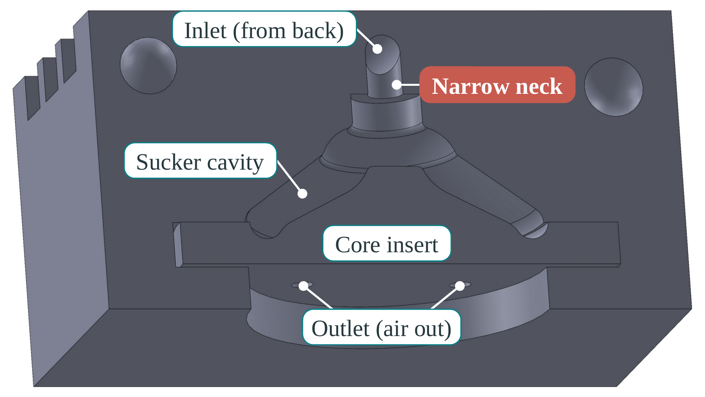
Image 1: One half of the sucker mold with its core insert. The feed neck connects the inlet to the thin cavity, and four outlets let air leave the cavity.
2.3. Shear and thermal thinning
The PVA pre-gel solution thins with both shear rate and temperature (Image 2). At 25 °C, its viscosity starts near 20 Pa·s at low shear and drops to about 2.7 Pa·s at 1000 s⁻¹, while warmer solutions are less viscous across all shear rates. Temperature thus sets the baseline viscosity curve. Injection pressure sets how fast the solution flows and therefore the shear rate reached inside the mold, which determines where on that curve the solution operates. To isolate pressure-driven shear effects, this study fixes the temperature and varies the injection pressure.
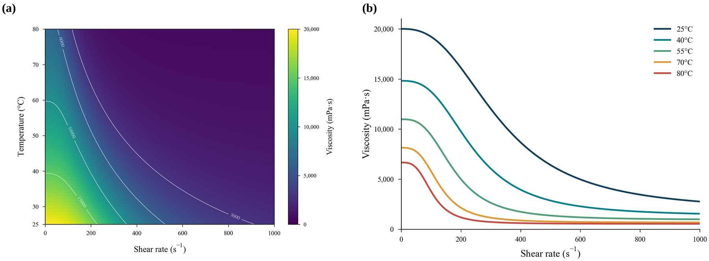
Image 2: Viscosity of the PVA pre-gel solution against shear rate at 25–80 °C: (a) map over temperature and shear rate; (b) curves at five temperatures.
2.4. Research question, hypothesis and objectives
The research question is how the shear-thinning rheology of the PVA solution and the injection pressure govern material delivery through the neck and flow within the cavity. The hypothesis follows from two facts known from the experiments and mold design: rheological measurements show that the viscosity of the PVA solution falls as the shear rate rises (Image 2), and the mold forces the flow through a narrow neck whose cross-section is much smaller than that of the cavity, ensuring a higher shear rate in the neck than in the cavity. The solution is therefore expected to thin where supply is restricted and to stay viscous where the part forms.
The simulation tests this expectation and quantifies what remains unaddressed, namely the exact magnitude of the supply increase and whether the cavity flow remains slow and viscous-dominated as injection pressure rises. The objectives encompass simulating flow through the mold fluid domain, benchmarking the PVA solution against a matched Newtonian control, mapping the flow response across 50–600 kPa, and establishing rational injection settings. These settings will then be validated through casting trials based on three performance metrics: fill completeness, visible defects, and dimensional accuracy.
3. Materials, mold and completed work
3.1. Adopted formulation
This study uses a single PVA formulation, which is injected as a pre-gel solution and gelled inside the mold by freeze–thaw cycling (the formulation was developed by Zhihang Qin, a PhD candidate in Prof. Cecilia Laschi’s group, in collaboration with Prof. Yu Jun Tan’s group; its composition is unpublished and cannot be disclosed in this report). Keeping the formulation fixed makes the manufacturing conditions the only variables. Mold filling depends on how the viscosity of the solution changes with shear rate and temperature, and these curves are shown in Image 2.
3.2. From mold design to fabricated samples
The simulation fluid domain represents the internal volume of the mold—comprising the feed channel, neck, cavity, and outlet passages—matching the exact space occupied by the solution during casting. Under the mentor’s guidance, I performed all simulations, parameter sweeps, verification checks, and post-processing reported in Sections 4–6. Appendix A states the contributions in full. Application samples are produced via precursor mixing, centrifugal degassing to remove bubbles, syringe loading, pneumatic injection into the closed split mold (Image 3), in-mold freeze–thaw gelation, and demolding.
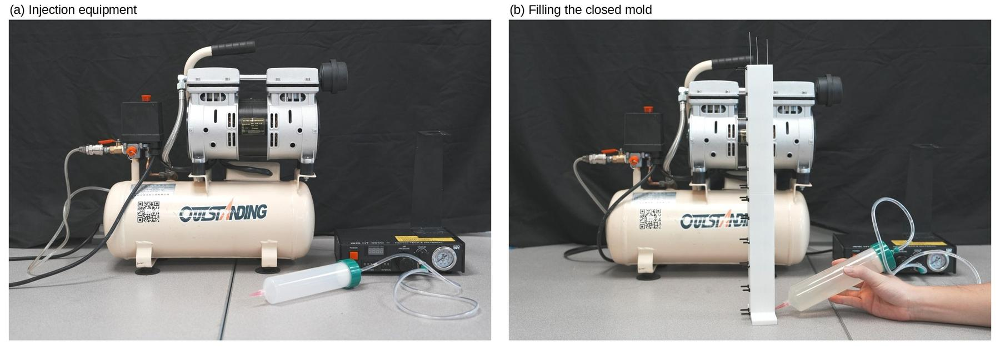
Image 3: Injection setup in the laboratory: (a) compressor-driven dispenser; (b) syringe delivery into the closed split mold.
3.3. Completed work and technical challenges
Table 1 summarizes this semester’s work. Several steps required solving technical problems before the results could be trusted. The main ones were extracting a watertight fluid domain from a split mold with a core insert, detecting and correcting a model-scale error, and placing probes inside thin passages.
| Work package | Status | Technical difficulty resolved |
|---|---|---|
| Fluid domain | Completed | One connected, watertight domain (inlet, feed, neck, cavity, four outlets) extracted from the split mold by Boolean operations; inlet and outlet boundaries identified |
| Physical-scale correction | Completed | Re-saved geometry used mm with meter-based coordinates; error detected, corrected by a factor of 1000, and 27 model files rebuilt and re-solved at 17.204 × 13.543 × 25.32 mm |
| Matched comparison | Completed | Newtonian control with identical geometry, mesh and boundaries; Re and Ca expressions corrected to each model’s local viscosity |
| Pressure series | Completed | Twelve PVA cases (50–600 kPa) re-solved on a common 111,713-element mesh; 48 outlet-flux integrals evaluated |
| Probe and mesh study | Completed | Eleven probes placed inside thin passages with snapping and extrapolation disabled; 95,815- and 377,218-element meshes compared |
| Fabrication | Completed | Mixing, centrifugal deairing, closed-mold injection, freeze–thaw and demolding of thin-rimmed suckers |
| Suction test | Preliminary | Instron pull-off curve on a flat 3D-printed surface; practical 0.2 kg lift |
| Validation | Planned | Casting trials, outlet-arrival tests and silicone castings (Section 8) |
Table 1: Work completed this semester and the technical difficulty resolved in each package.
4. Simulation design
4.1. Isolating shear thinning
The closed mold precludes direct observation of the internal velocity, shear rate, and viscosity during casting. Moreover, physical trial-and-error is both time-consuming and material-intensive. Numerical simulation is therefore used to resolve these internal fields and to screen injection settings prior to physical experiments. The simulation is performed in COMSOL Multiphysics 6.2, where the flow is solved as single-phase, incompressible, isothermal laminar flow (Table 2; COMSOL, n.d.-a). Under this single-phase description, the injection is represented as a flow that develops in the mold under the applied pressure. The displacement of air is not modeled explicitly, as this would require a two-phase model. The pre-gel solution, referred to as “PVA” in Sections 4–6, follows a Carreau law fitted to the measured viscosity (COMSOL, n.d.-d):
\(\mu(\dot{\gamma})\ = \ \mu_{\infty}\ + \ (\mu_{0}\ - \ \mu_{\infty})\ {\lbrack 1\ + \ {(\lambda\dot{\gamma})}^{2}\rbrack}^{\frac{n\ - \ 1}{2}}\) (1)
The fitted parameters are μ₀ = 20 Pa·s, μ∞ = 0.5 Pa·s, λ = 2 s, and n = 0.45. To isolate the effect of shear thinning, the PVA solution is compared with a Newtonian control. This control has a constant viscosity of 20 Pa·s, equal to μ₀. Both liquids therefore have the same viscosity at low shear. They also share the same geometry, mesh, and boundary conditions. Any difference in flow consequently arises from shear thinning alone. The control represents a silicone-type precursor in its Newtonian behavior. Measurements of silicone viscosity and physical silicone castings are planned for semester 2 (Section 8). Twelve PVA cases at pressures from 50 to 600 kPa test whether the conclusions depend on a single setting. The matched comparison with the control is made at 450 kPa.
| Item | Setting | Status |
|---|---|---|
| Geometry | Fluid domain of the mold, 17.204 × 13.543 × 25.32 mm, comprising gate, feed channel, neck, cavity and four outlets | Mold geometry; scale verified |
| Physics | COMSOL 6.2 Laminar Flow (spf2): incompressible, isothermal, single phase; no-slip walls | Single-phase flow |
| Boundaries | Inlet total pressure 50–600 kPa (12 cases); outlets 0 Pa static | Equal for both liquids |
| PVA | Carreau: μ0 20 Pa·s, μ∞ 0.5 Pa·s, λ 2 s, n 0.45 | Fitted to measured viscosity |
| Newtonian control | Newtonian, 20 Pa·s at all shear rates | Matched to PVA μ0 |
| Density, temperature | 1070 kg/m³; 293.15 K | Equal for both liquids |
| Mesh and time | Common mesh of 111,713 elements; finer 377,218-element probe model; evaluated at t = 1 s | Checks in Section 6.1 |
| Diagnostics | Re and Ca with local μ; Lref = 1 mm; σref = 0.05 N/m | σref assumed |
Table 2: Simulation set-up shared by the pressure series and the matched comparison.
4.2. Fluid domain, probes and diagnostics
Image 4 shows the fluid domain. Local probes are needed because a satisfactory total flow rate can coexist with a cavity region that hardly moves.
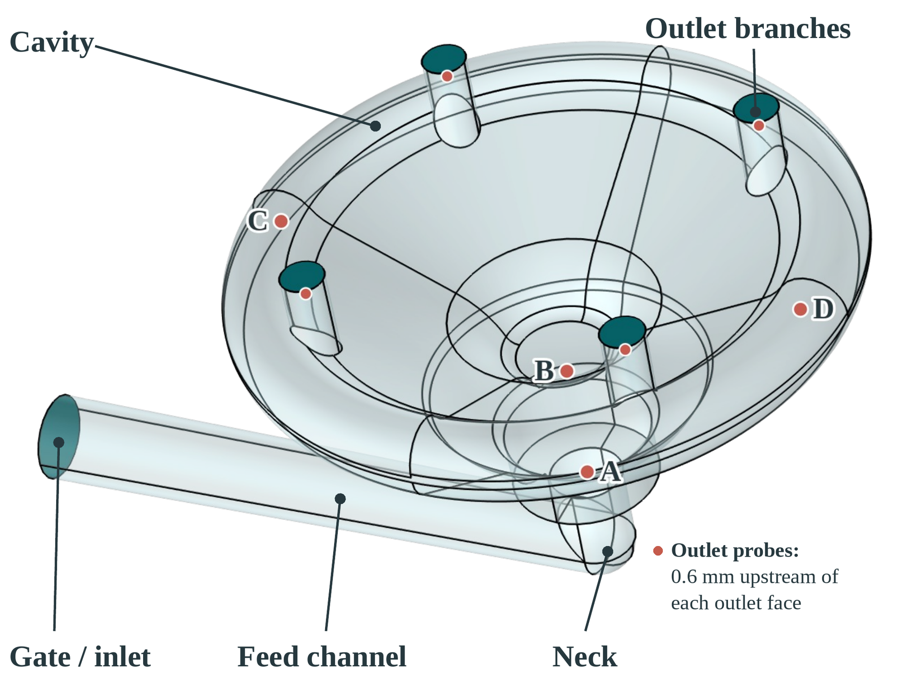
Image 4: Fluid domain extracted from the mold CAD (COMSOL). Teal: inlet and outlet faces; coral: probes A (neck), B (cavity entry), C and D (cavity) and one before each outlet (coordinates in Appendix B).
The flow at these probes is characterized by two dimensionless numbers. The Reynolds number, Re, compares inertia with viscous forces. The capillary number, Ca, compares viscous forces with surface tension. They are defined as (COMSOL, n.d.-b, n.d.-e):
\(Re\ = \ \frac{\rho UL_{ref}}{\mu}\) (2)
\(Ca\ = \ \frac{\mu U}{\sigma_{ref}}\) (3)
where ρ is the density, U is the local speed, and μ is the local viscosity of each liquid. The reference length is Lref = 1 mm, and the surface tension is assumed to be σref = 0.05 N/m. Because the model is single-phase, it contains no explicit liquid–air interface. Ca therefore measures the ratio of the viscous and surface-tension force scales (Appendix B).
5. Simulation results
5.1. Shear thinning enhances material delivery
At 450 kPa, the PVA solution reaches 8.45 m/s at neck Probe A, compared with 0.248 m/s for the Newtonian control, which is 34 times higher. The delivered flow rate is 13.90 mL/s, compared with 0.4245 mL/s for the control, a 32.75-fold increase (Image 5, Table 3). This gain is caused by shear thinning. The shear rate is highest in the feed channel and neck, where the apparent viscosity of PVA falls to about 0.55–0.7 Pa·s (Image 6). The flow resistance therefore drops exactly where the geometry restricts the flow. For casting, this means a strong supply into the cavity. A faster flow, however, raises the question of stability, which Sections 5.2 and 5.3 examine.
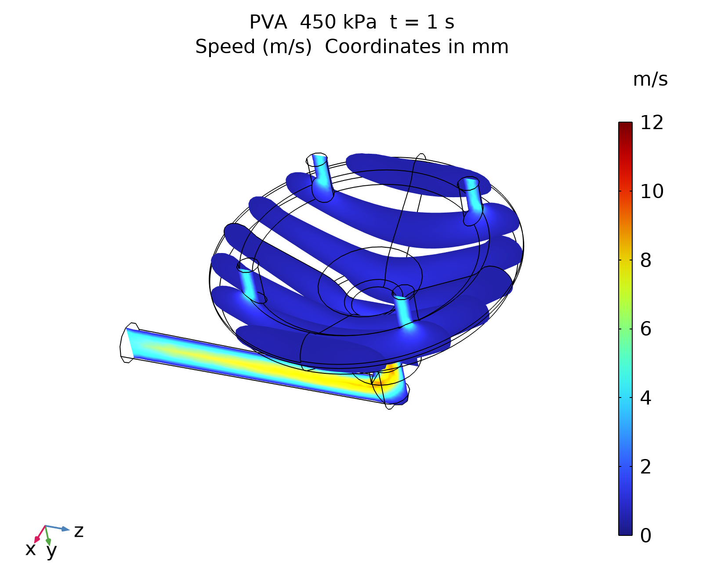
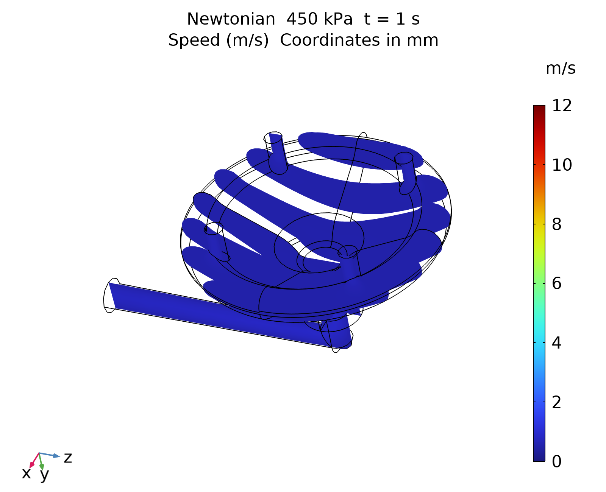
Image 5: Speed at 450 kPa and t = 1 s on seven yz slices for PVA and the Newtonian control (panel titles), with the same camera and a linear range of 0–12 m/s. Dark blue indicates low speed.
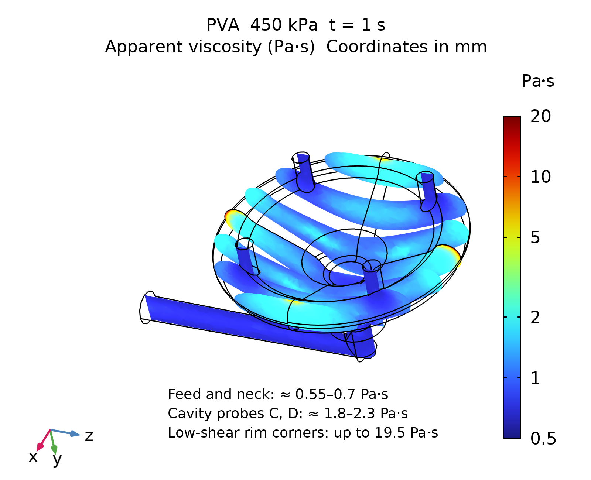
Image 6: PVA apparent viscosity at 450 kPa and t = 1 s on the same slices (logarithmic range 0.5–20 Pa·s): lowest in the feed, neck and outlet branches, where shear is highest, and highest in low-shear rim corners.
| Quantity | PVA (Carreau) | Newtonian control | PVA/control |
|---|---|---|---|
| Inward flow (mL/s) | 13.90 | 0.4245 | 32.75 |
| Maximum speed (m/s) | 9.435 | 0.2834 | 33.29 |
| Speed at neck A (m/s) | 8.446 | 0.2483 | 34.0 |
| Speed at cavity C / D (mm/s) | 9.11 / 20.55 | 0.521 / 1.019 | 17.5 / 20.2 |
| Apparent viscosity (Pa·s) | 0.5426–19.48 | 20 | – |
| Maximum shear rate (s⁻¹) | 3.444 × 10⁴ | 916.7 | – |
| Re at C / D | 0.0042 / 0.012 | 2.8 × 10⁻⁵ / 5.5 × 10⁻⁵ | – |
| Maximum Re (feed) | 17.42 | 0.01516 | – |
| Ca at C / D | 0.43 / 0.76 | 0.21 / 0.41 | – |
| Ca at neck A | 104 | 99.3 | – |
| Inlet–outlet flux discrepancy (%) | 0.6365 | 2.411 | – |
Table 3: Matched comparison at 450 kPa and t = 1 s on the common mesh. Probe values are point samples (Table B1); Re and Ca use each liquid’s local viscosity.
5.2. Low-inertia flow in the sucker cavity
Re increases with speed, so its distribution resembles that of the speed (Image 7). The quantity of interest is its magnitude relative to one. In the cavity, Re is 0.004–0.012 for PVA and about 10⁻⁵ for the Newtonian control. Viscous forces therefore dominate inertia for both liquids in the region where the sucker forms. This suppresses inertia-driven jetting and folding of the front, both of which can trap air. Within this regime, the Re of PVA is higher than that of the control, because PVA flows faster at a lower local viscosity. In the feed channel, PVA reaches Re ≈ 17. This flow is laminar but not free of inertia. The condition Re ≪ 1 therefore holds in the cavity but not in the whole domain.
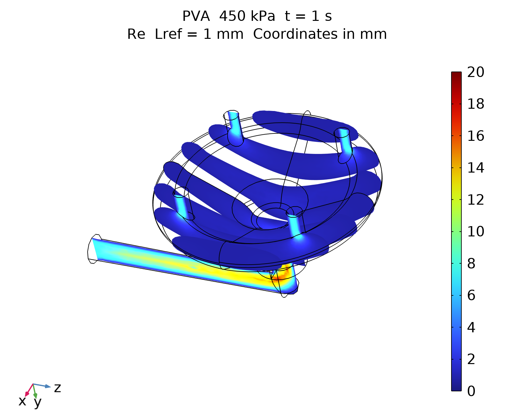
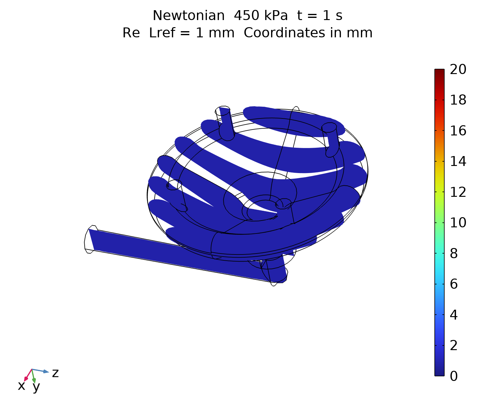
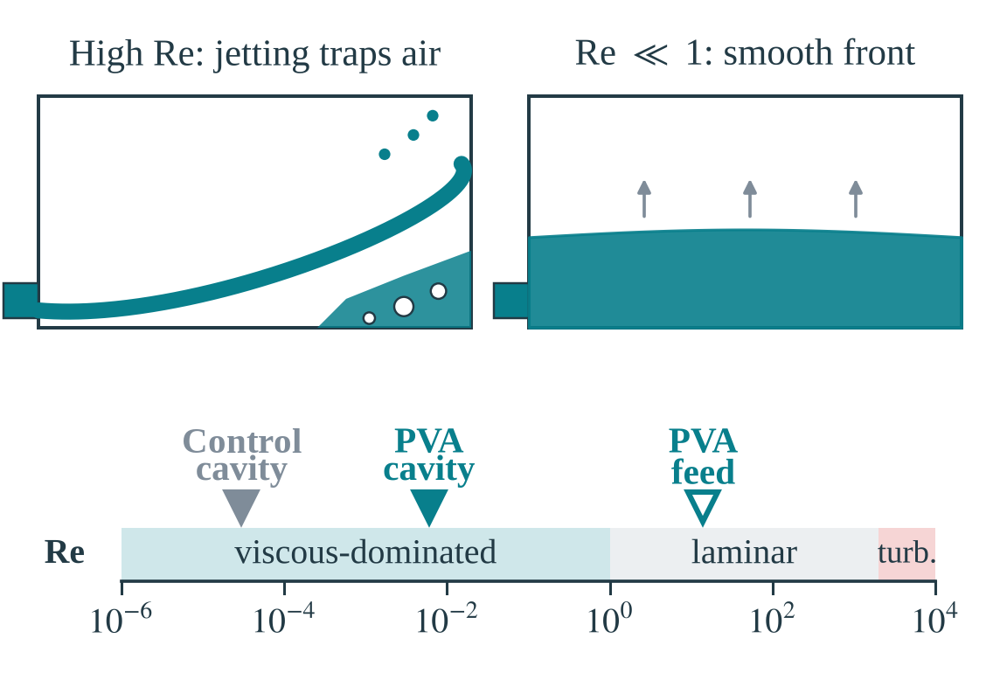
Image 7: Reynolds number at 450 kPa (Lref = 1 mm) for PVA and the Newtonian control (panel titles), shared range 0–20, and regime summary. Both cavities are viscous-dominated and the PVA feed is laminar. The control panel looks uniformly dark because its values are small.
5.3. Surface-tension effects in the thin cavity
A small Ca indicates that surface tension remains significant. In the cavity, Ca is 0.43–0.76 for PVA and 0.21–0.41 for the Newtonian control, which is below one for both liquids. At the neck, Ca is about 100 for both, because pressure-driven viscous flow dominates there (Image 8). On a wetting mold surface, surface tension therefore still helps to draw liquid into the rim and corners, as in capillary-assisted mold filling (Caglar et al., 2019). Air entrainment at a moving contact line also depends on wetting and on how the air escapes (Chan et al., 2013). At Probes C and D, PVA moves 17.5–20.2 times faster than the control and still remains below Ca = 1. Its lower local viscosity also accelerates capillary penetration, whose rate scales with σ/μ (Washburn, 1921). This benefit requires a wetting contact angle. It also depends on the assumed σ: the condition Ca < 1 at D holds as long as σ exceeds 37.8 mN/m (Appendix B.7).
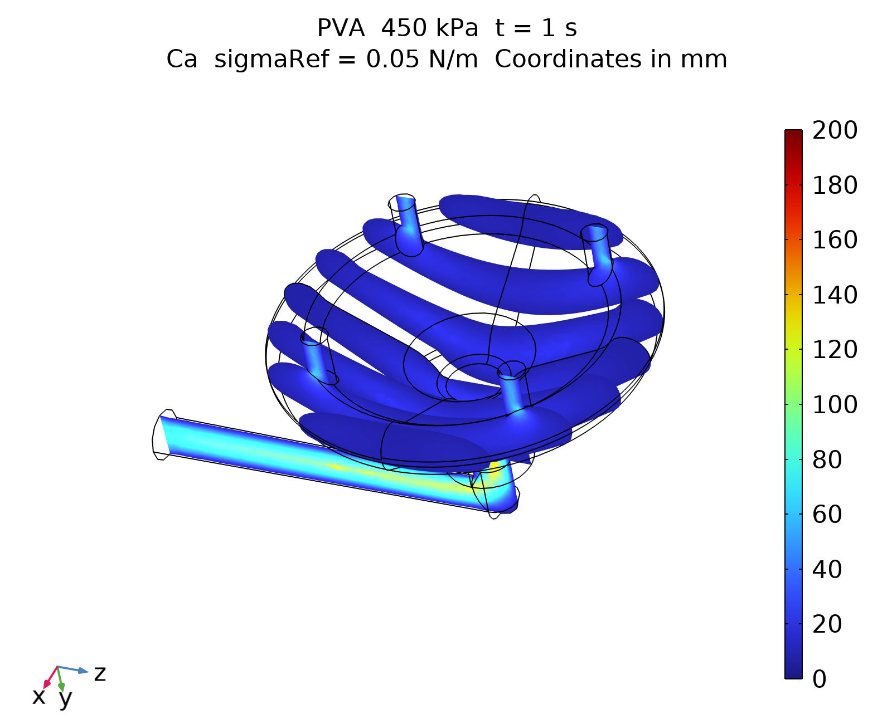
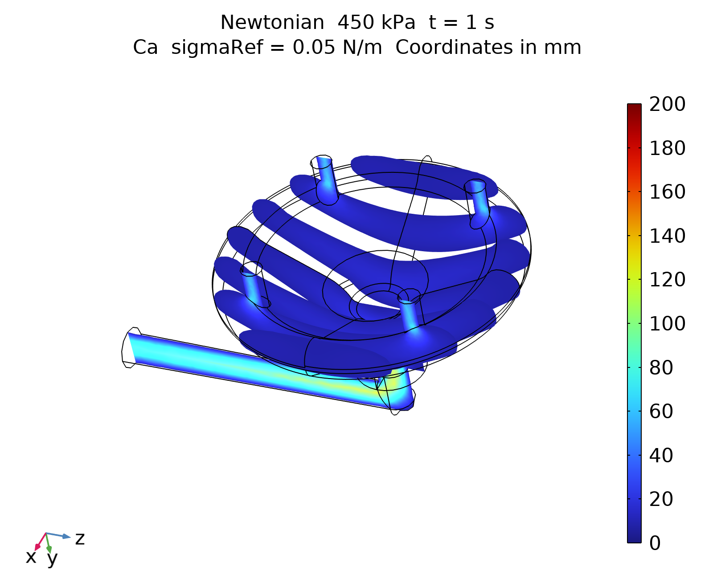
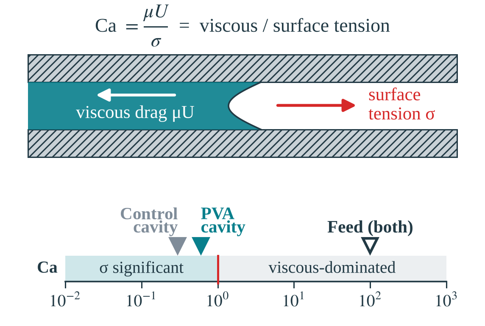
Image 8: Capillary number at 450 kPa (assumed σref = 0.05 N/m) for PVA and the Newtonian control (panel titles), shared range 0–200, and regime summary. Both cavities have Ca < 1, whereas the feed is viscous-dominated. Ca is post-processed from the single-phase solution.
5.4. Injection pressure and flow control
Across the twelve PVA cases, the inward flow rises from 1.170 mL/s at 50 kPa to 18.23 mL/s at 600 kPa. Over the same range, Probes C and D maintain Re < 0.02 and Ca < 1 (Image 9; Appendix D). The conclusions therefore do not depend on a single setting. Even at 50 kPa, PVA supplies 2.756 times the flow of the control at 450 kPa. This is achieved at an inlet pressure that is 88.9% lower, which offers a gentler option when modest throughput suffices. Higher pressure is not automatically better. From 450 to 600 kPa, the flow rises by 31%, while Ca at D increases to 0.93 and approaches one. The working rule is therefore to use the lowest pressure that meets the required supply. This rule remains to be confirmed by casting. Running the control at all twelve pressures is the next numerical step.
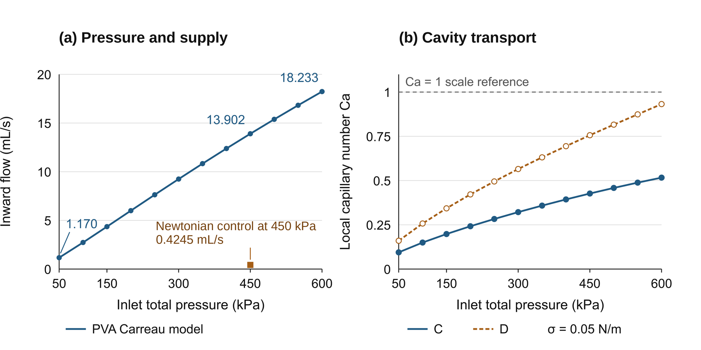
Image 9: PVA pressure series at t = 1 s (common mesh): (a) inward flow at twelve pressures, with the Newtonian control at 450 kPa; (b) Ca at C and D (σref = 0.05 N/m). The line Ca = 1 is a force-scale reference.
5.5. Balanced outlet delivery
The four outlets are located at the corners of a 9.05 mm square centered on the neck axis. They have identical areas (Image 10). In the fine model, each outlet carries 24.99–25.02% of the flow. The speeds in the four branches differ by 0.6%. Across all twelve pressures, the shares remain within 24.97–25.03%.
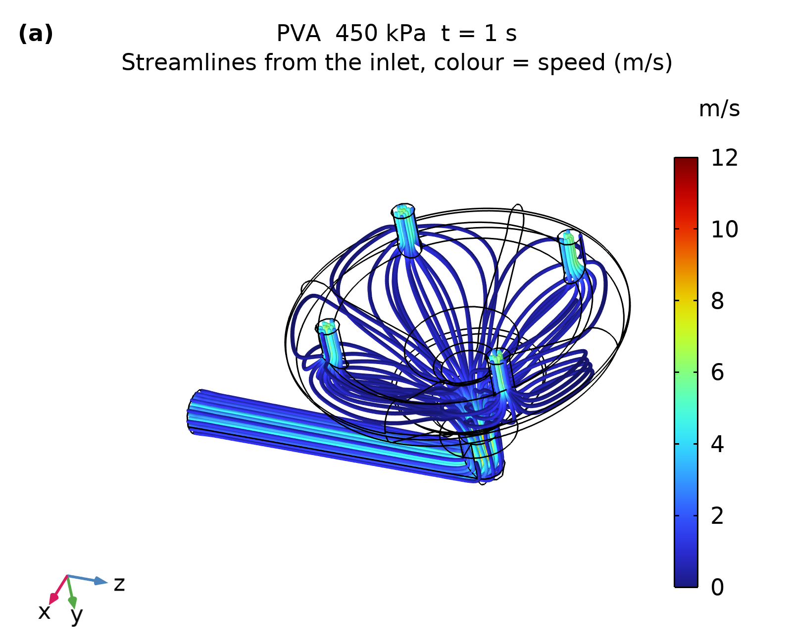
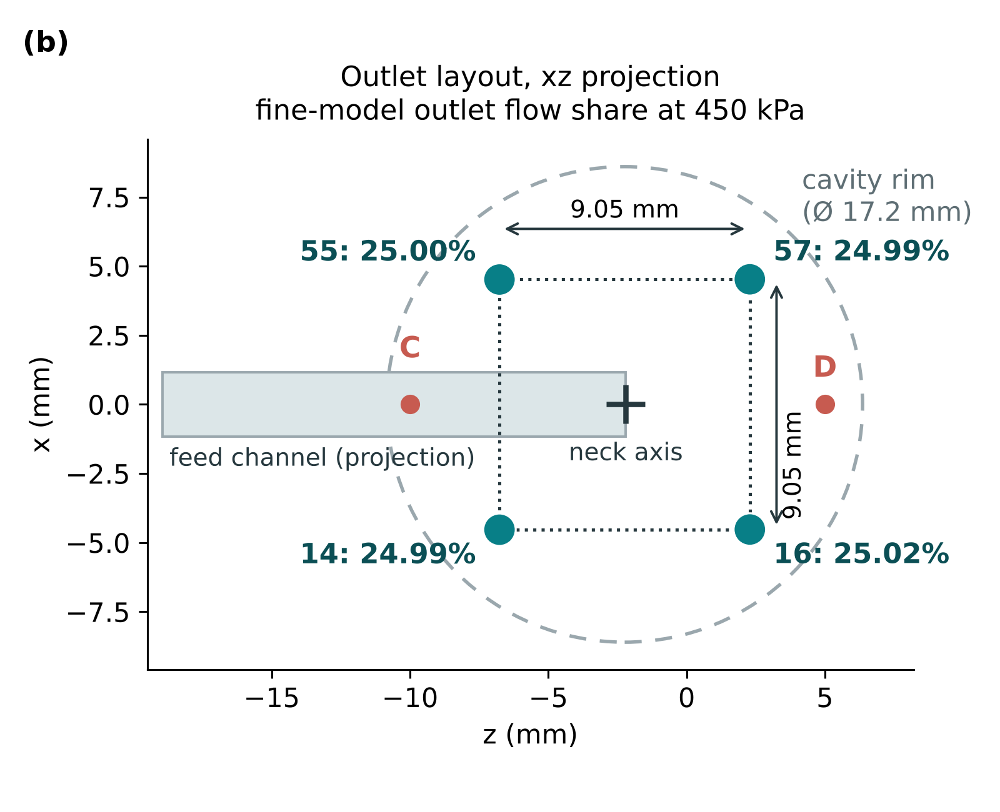
Image 10: Outlet balance at 450 kPa, showing inlet-seeded streamlines colored by speed (a) and the outlet layout with fine-model flow shares (b).
5.6. Flow mechanisms supporting PVA injection casting
Table 4 combines the checks. PVA thins sufficiently under shear to supply the cavity quickly. At the same time, the cavity flow remains viscous-dominated and capillary-assisted. This combination is the behavior that the sucker mold requires.
| Check | Finding | Value for casting |
|---|---|---|
| Speed | At equal pressure, PVA is 34× faster at the neck and delivers 32.75× the flow | Sufficient supply into the cavity |
| Re | Cavity Re ≪ 1 for both liquids; PVA Re > control Re | Stable, viscous-dominated flow in the cavity |
| Ca | Cavity Ca < 1 for both liquids; 0.43–0.76 for PVA | Surface tension still helps fill the rim and corners on a wetting wall |
| Pressure | Re < 0.02 and Ca < 1 at C and D in all 12 cases; outlets 24.97–25.03% | Pressure can be set for throughput without leaving this regime |
Table 4: Simulation findings and their value for sucker casting.
6. How far the simulation can be trusted
A simulation can fail at four points: in its design, which covers the physics and the material law; in the import of the CAD model into COMSOL; in the numerical solution; and in the post-processing. The checks below follow standard verification and validation practice (Oberkampf & Trucano, 2002). Verification asks whether the equations are solved correctly. Validation asks whether they represent the real casting.
6.1. Verification completed
The scale of the imported geometry was verified first (Table 5). Face areas match the design, and inlet and outlet flows agree within 0.075% on the fine mesh. Refining the mesh from the coarse to the fine model changed the inlet flow, a global quantity, by 6.1%. Trends and comparisons are therefore reliable enough to guide experiments. Local values are more sensitive to the mesh. On the same refinement, probe speeds changed by up to 16.7% and shear rates by up to 131%. Local magnitudes therefore require a formal grid-convergence study (Celik et al., 2008).
| Failure point | Check performed | Outcome |
|---|---|---|
| CAD to fluid domain | Boolean extraction confirmed as one connected domain; inlet 37 and outlets 14, 16, 55 and 57 re-identified after rebuilding | Passed |
| Import scale | mm/m inconsistency found; ×1000 correction; spans 17.204 × 13.543 × 25.32 mm verified; 27 files rebuilt | Corrected |
| Geometry fidelity | Each outlet face 1.0798 × 10⁻⁶ m²; their sum equals the 4.319 × 10⁻⁶ m² inlet face; volume 0.674 mL | Symmetry preserved |
| Conservation | Flux discrepancy 0.6365% (common mesh) and 0.07465% (fine mesh) | PVA < 1%; matched control 2.411% |
| Mesh sensitivity | 95,815 vs 377,218 elements: inlet flow 6.1%, probe speed ≤ 16.7%, shear rate ≤ 131% | Global passed; local open |
| Time behaviour | Probe speeds vary by ≤ 0.0011% over 0.5–1 s | Steady operating point |
| Probes | All eleven inside the domain; snapping and extrapolation disabled | Passed |
| Post-processing | Re and Ca evaluated with local viscosity at the same point; constant 20 Pa·s used throughout for the control | Corrected and verified |
Table 5: Verification checks completed, organized by the point at which a simulation can fail.
6.2. Material inputs
The model takes three material inputs: the Carreau viscosity law, the density, and a reference surface tension (Table 2). The Carreau law is fitted to the measured viscosity of the PVA solution. It reproduces the measured low-shear plateau of about 20 Pa·s (Image 2). The model is single-phase and treats the liquid as purely viscous, without wall slip, elasticity, or yield stress. The pressure is applied at the mold inlet. The comparison is constructed so that these choices affect both liquids equally. The PVA solution and the Newtonian control share the same geometry, mesh, and boundary conditions. Any error common to both therefore largely cancels. Consequently, the ratios between the two liquids and the flow regimes are more reliable than the absolute values. In the cavity, both liquids give Re far below one and Ca below one. The conclusion about the cavity regime therefore holds for both.
6.3. Validation against physical casting
Validation will proceed from simple to complete (Table 6). Following the project plan, the model will be used to guide casting once two conditions are met. The filling time must agree within about 20%, and defects must appear where the model flags them.
| Level | Test | Compared with | Proposed target |
|---|---|---|---|
| Solver set-up | Straight tube with Newtonian and Carreau liquids | Exact Hagen–Poiseuille and semi-analytical flow rate | Error < 1% |
| Geometry | CAD cavity volume; mass of solution that fills the mold | COMSOL volume, 0.674 mL | Within 5% |
| Pressure–flow | Timed outflow mass at set pressures; transducer at the mold inlet | Simulated Q(p) | Within 20% |
| Flow split | Outflow collected separately at each outlet | 25% per outlet | Each 25 ± 2.5% |
| Filling | Transparent-mold video; outlet arrival sensors; short shots | Two-phase filling model | Fill time within 20%; arrival spread < 5% |
| Part quality | Bubble, weld-line and short-shot maps (ImageJ, 0–3 grade) | Low-speed, high-viscosity regions | Defects in flagged regions |
Table 6: Staged validation plan. Targets are proposed, and the 20% filling-time target follows the project plan.
6.4. Do the four outlets fill simultaneously?
Simultaneous outflow matters because an outlet that floods first becomes a low-resistance exit. This slows filling elsewhere and risks trapping air. Section 5.5 shows that the four outlets carry equal shares of the flow. Equal hydraulic resistance, however, does not by itself determine the arrival times. The liquid crosses a partly filled cavity, in which feed momentum, gravity, and wetting can favor one side. Arrival will therefore be determined directly in four ways. The first is a two-phase level-set filling model with measured surface tension and contact angle (COMSOL, n.d.-c, n.d.-f), for which the target is an arrival spread below 5% of the fill time. The second is filming of a transparent printed mold. The third is a set of conductive contacts at the four outlets that log the arrival. The fourth is a series of short shots stopped at 80–95% of the cavity volume (Appendix B.8). If one outlet leads, three remedies are available: its diameter can be reduced, an overflow well can be added, or the mold can be reoriented so that the last-filling outlet is highest.
7. Casting quality and sucker performance
The demolded PVA suckers retain their cup shape and neck connection. They show no visible defects (Image 11). They also form better than silicone castings. A side-by-side photographic comparison will be added next semester.
The suction performance of the suckers was then assessed in a pull-off test on an Instron machine. The representative curve rises to about 2.5 N at a displacement of about 6.4 mm. In a practical check, one sucker lifted an object of about 0.2 kg. The weight of this object is 1.96 N, and the measured peak exceeds it by about 27%. The two independent measurements therefore agree.
The as-cast part cannot exceed the volume of the modeled fluid domain, 0.674 mL, which also includes the feed and outlet passages. Its mass is therefore below about 0.72 g. The payload of 0.2 kg consequently exceeds 270 times the mass of the sucker. Suction also requires an unbroken seal around the whole rim. Sustaining 2.5 N therefore indicates that the thin rim, which is the feature targeted by the flow analysis, filled without seal-breaking voids. These results were obtained with a first, unoptimized design. They are based on one representative curve. Repeated tests will establish repeatability.
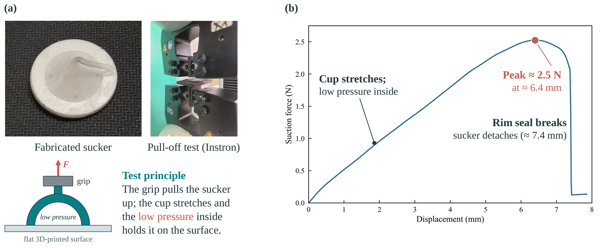
Image 11: Fabricated PVA sucker and first suction test: demolded sucker, Instron arrangement and test principle (a), and representative pull-off curve on a flat 3D-printed surface (b).
8. Plan and future work
Each next step addresses an open question from Sections 5–7 (Table 7). Work on the flow model comes first, because every later comparison depends on it. December is reserved for non-experimental work. Specimen allocations and records are given in Appendix C.
| Open question | Next step | Output | Timing |
|---|---|---|---|
| Are local values converged, and does the advantage hold at all pressures? | Three-mesh study; tube benchmark; Newtonian control at all 12 pressures; two-phase filling model | Converged values; predicted arrival times | Dec 2026–Feb 2027 |
| Does the simulation match the real casting? | Pressure–flow, per-outlet outflow and filling tests; defect maps | Validated or corrected model | Jan–Mar 2027 |
| Do the four outlets fill simultaneously? | Transparent mold, outlet sensors and short shots | Arrival spread at the four outlets | Jan–Mar 2027 |
| Does PVA cast the sucker better than silicone? | Same sucker mold cast in silicone at matched conditions; side-by-side photographs | Fill completeness, defects, dimensions, pull-off force | Jan–Mar 2027 |
| Thesis | Outline and literature (Dec); writing (Feb–Mar); April buffer | Final thesis | Dec 2026–Apr 2027 |
Table 7: Plan linking each open question to its next step, output and timing.
9. Conclusion
This work treats soft-robot casting as an engineered injection process. It uses a flow model of the sucker mold to test whether shear thinning helps. At equal pressure, PVA moves 34 times faster at the neck than a Newtonian control of equal zero-shear viscosity. At the same pressure, PVA also delivers 32.75 times the flow of this control. Meanwhile, the PVA flow in the cavity remains viscous-dominated and capillary-assisted. The four outlets share the PVA flow equally from 50 to 600 kPa. These results rest on resolved technical obstacles, from fluid-domain extraction to probe placement in thin passages (Table 1). Verification establishes mass conservation and the fidelity of the geometry import. Casting trials and outlet-arrival tests will establish agreement with the real casting. Cast suckers already grip by suction, and one sucker lifted 0.2 kg. The tunable viscosity of PVA makes injection casting a promising route to soft suckers. In semester 2, this route will be benchmarked against silicone castings.
Appendix A. Contributions
Zhihang Qin, the project mentor, designed the sucker and its mold and developed the PVA formulation. Under his guidance, I performed the rheological characterization, mold casting trials, mechanical pull-off testing, and all CFD modeling and verification analyses reported here.
Appendix B. Equations and numerical assurance
B.1. Constitutive model
Implemented in COMSOL as muinf+(mu0-muinf)*(1+(lambda*spf2.sr)^2)^((nPVA-1)/2), the parameters define the Carreau law plotted in Image B1, also the a = 2 special case of Carreau–Yasuda: ρ = 1070 kg/m3, μ0 = 20 Pa·s, μ∞ = 0.5 Pa·s, λ = 2 s and n = 0.45. They describe the shear-thinning response of the PVA solution. The control uses constant μ = 20 Pa·s in both the solve and Re/Ca calculations.
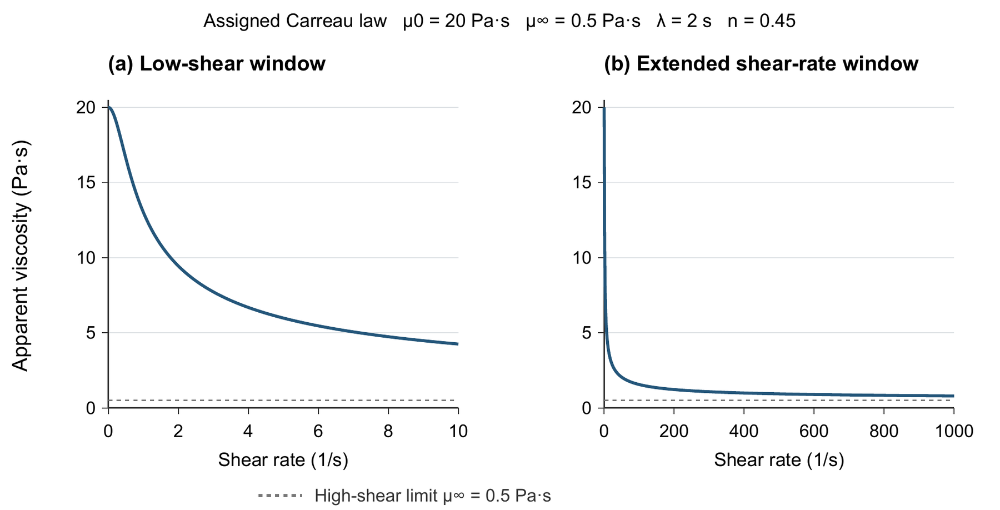
Image B1: Carreau viscosity over shear-rate ranges of 0–10 and 0–1000 s⁻¹, with a common linear viscosity axis and a high-shear limit of 0.5 Pa·s.
B.2. Governing equations
For the incompressible, isothermal generalized Newtonian reference, with body forces omitted, continuity and momentum are:
\(\nabla \cdot u\ = \ 0\) (B1)
\(\rho\lbrack\frac{\partial u}{\partial t}\ + \ (u \cdot \nabla)u\rbrack\ = \ - \nabla p\ + \ \nabla \cdot \lbrack\mu(\dot{\gamma})(\nabla u\ + \ {(\nabla u)}^{T})\rbrack\) (B2)
The rate-of-deformation tensor and shear-rate magnitude are:
\(D\ = \ \frac{1}{2}(\nabla u\ + \ {(\nabla u)}^{T}),\ \ \ \ \ \dot{\gamma}\ = \ {(2D:D)}^{\frac{1}{2}}\) (B3)
Apparent viscosity is evaluated from the local shear-rate magnitude within the generalized Newtonian formulation.
B.3. Corrected postprocessing
PVA Re: rhoPVA*spf2.U*1[mm]/spf2.mu
Newtonian Re: rhoPVA*spf2.U*1[mm]/(20[Pa*s])
PVA Ca: spf2.mu*spf2.U/(0.05[N/m])
Newtonian Ca: 20[Pa*s]*spf2.U/(0.05[N/m])
Velocity magnitude is spf2.U (m/s), shear-rate magnitude spf2.sr (1/s), apparent viscosity spf2.mu (Pa·s) and static gauge pressure p2 (Pa). Re and Ca use colocated velocity and viscosity values. The Newtonian control uses constant viscosity 20 Pa·s. All reported quantities are evaluated from the corrected physical-size solutions.
B.4. Geometry and numerical verification
Both constitutive models were evaluated at t = 1 s in Study 1/Solution 1 on matched meshes of 111,713 elements. Whole-domain extrema use COMSOL’s Lagrange-point numerical sampling and refinement. Local Re and Ca are evaluated as complete expressions at each sampling point.
The geometry-scale correction reconciled metre-based coordinates with the millimetre import setting. Geometry-dependent coordinates and explicit mesh lengths were checked before rebuilding 27 affected model files. The verified spans are 17.204 × 13.543 × 25.32 mm. Mesh-based numerical integration gives a volume of 6.73849 × 10−7 m3, an inlet area of 4.31923 × 10−6 m2 and a combined outlet area of 4.31924 × 10−6 m2.
Probe coordinates were checked against the rebuilt fluid domain. Common A–D locations in Table B1 give finite evaluations in both matched models. The finer PVA model uses eleven interior locations with boundary snapping and extrapolation disabled; coordinates and values are reported in Table B2.
The control solves with constant μ = 20 Pa·s. Its Reynolds-number denominator and capillary-number viscosity factor were checked against that same constant, while PVA uses the solved apparent viscosity spf2.mu. The plots and scalar statistics were regenerated from the recomputed fields. These checks distinguish the constitutive response from an inconsistent diagnostic formula.
Inward inlet flow is Qin = −∫ u · n dA on boundary 37, and Qout is the outward integral over boundaries 14, 16, 55 and 57. The relative discrepancy |Qout − Qin|/max(Qin, Qout) is 0.6365% for the matched PVA case and 2.411% for the control. The finer PVA case gives 0.07465%. At constant density, these values also quantify the relative mass-flow discrepancy.
The matched comparison uses 111,713 elements, linear velocity interpolation and relative tolerance 0.001. The supplementary PVA meshes contain 95,815 and 377,218 elements; their inlet-area and volume integrals differ by 3.211% and 0.4985%, respectively, relative to the fine values. The solver uses adaptive internal time steps. Further checks will examine mesh geometry, integration, tolerances and time stepping, with particular attention to gradients near sharp transitions.
The time-dependent calculation approaches a steady operating point. Consistent initialization supplies the starting field, and the nearly unchanged velocities over 0.5–1 s support use of the t = 1 s output for comparing injection conditions.
Minimum static gauge pressure is −0.2636 kPa for PVA and −2.702 kPa for the control, relative to the zero-gauge outlet. The prescribed 450 kPa inlet total pressure sets the injection condition, while the static-pressure field describes pressure distribution within the mold.
Comparison exports use seven equally distributed yz slices and the same camera. Each pair shares a linear color range: velocity 0–12 m/s, Ca 0–200 and Re 0–20. The viscosity export uses a logarithmic range of 0.5–20 Pa·s, and the streamline export seeds 60 streamlines uniformly on inlet boundary 37.
| Sample and coordinates (mm) | PVA speed (m/s) | Control speed (m/s) | PVA Ca | Control Ca |
|---|---|---|---|---|
| A (0, −0.8, −2.2) | 8.446 | 0.2483 | 104 | 99.33 |
| B (0, −4.5, −2.2) | 0.5857 | 0.009123 | 7.981 | 3.649 |
| C (0, −8.2, −10) | 0.00911 | 0.0005205 | 0.4268 | 0.2082 |
| D (0, −8.2, 5) | 0.02055 | 0.001019 | 0.7563 | 0.4076 |
Table B1: Colocated velocity and capillary-number values at the common A–D probe positions.
B.5. Capillary-pressure scale
The capillary-pressure scale is Pcap = 2σ|cosθ|/r, with Πp = |p2 − pref|/Pcap. For σ = 0.05 N/m, θ = 60°, r = 0.5 mm and pref = 0 Pa, Pcap = 100 Pa. Normalizing the nominal 450 kPa inlet total-pressure setting gives 4500; static pressures near 112.3 kPa at C and D give Πp ≈ 1123. Injection pressure therefore drives bulk delivery, while capillarity influences local penetration at a wetting interface. The sign of cosθ specifies whether capillary action assists or opposes invasion (COMSOL, n.d.-c, n.d.-f).
Shear thinning increases flow capacity at a fixed pressure and enables lower-pressure operation for a given delivery requirement. Hydraulic power is ΔpQ, and pressure work per delivered volume is Δp. The 50-versus-450 kPa comparison gives an 88.9% reduction in the prescribed inlet setting. A subsequent energy assessment can combine measured pressure histories, throughput and pump efficiency under matched delivery conditions.
B.6. Derived operating comparisons
The low-pressure flow ratio is QPVA,50/Qref,450 = 1.170018/0.424531 = 2.756, and the pressure-setting reduction is 100 × (1 − 50/450) = 88.9%. At 50 kPa, PVA gives C and D speeds of 0.5020 and 1.176 mm/s, compared with 0.5205 and 1.019 mm/s for the 450 kPa control. PVA therefore combines greater total delivery with comparable local cavity speeds at a substantially lower injection pressure.
For the fluid-domain volume V = 0.673849 mL, the nominal volume-throughput time V/Q is 0.04847 s for PVA at 450 kPa, 0.5759 s for PVA at 50 kPa and 1.587 s for the 450 kPa control. This common-volume measure expresses the delivery advantage in time units.
B.7. Sensitivity of the capillary interpretation
Because Ca = μU/σ, its value varies inversely with the surface-tension input. At D, Ca = 1 corresponds to σ = 37.82 mN/m at 450 kPa and 46.61 mN/m at 600 kPa, compared with the present 50 mN/m input. These values identify the sensitivity of the capillary balance to interface properties. Contact angle, curvature and air escape complement this balance in determining local filling behavior.
B.8. Fine-mesh probe study and outlet geometry
The finer PVA probe model has verified extents of 17.204 × 13.543 × 25.32 mm, 450 kPa inlet total pressure, zero outlet static gauge pressure and the same Carreau parameters. Eleven interior sites sample feed F, neck A, cavity B–D, neck-to-cavity locations N1 = (0, −0.5, −2.2) mm and N2 = (0, −2.5, −2.2) mm, and four outlet branches, whose probes lie 0.6 mm upstream of the outlet faces. Each records speed, static pressure, apparent viscosity and shear rate, with boundary snapping and extrapolation disabled. The matched comparison in Section 5 is reported on its common mesh.
| Probe | Position (x, y, z) mm |
Speed m/s |
Pressure kPa |
Viscosity Pa·s |
Shear rate s⁻¹ |
|---|---|---|---|---|---|
| A | (0, −0.8, −2.2) | 8.84 | 117.3 | 0.6719 | 2722 |
| B | (0, −4.5, −2.2) | 0.6897 | 118.8 | 0.6621 | 3029 |
| C | (0, −8.2, −10) | 0.009684 | 113.6 | 2.053 | 49.77 |
| D | (0, −8.2, 5) | 0.02249 | 113.7 | 1.734 | 75.6 |
| B14 | (−4.533, −10.15, −6.766) | 6.436 | 23.93 | 0.6547 | 3297 |
| B16 | (−4.525, −10.15, 2.285) | 6.436 | 23.74 | 0.6391 | 3998 |
| B55 | (4.518, −10.15, −6.766) | 6.444 | 23.61 | 0.6882 | 2309 |
| B57 | (4.525, −10.15, 2.285) | 6.474 | 23.95 | 0.6713 | 2740 |
Table B2: PVA probe coordinates and values at t = 1 s on the fine mesh. Speed is the local magnitude and pressure is static gauge pressure; shear-rate magnitudes remain mesh sensitive.
On the finer mesh, speed is 8.84 m/s at A and 0.009684 m/s at C, a 912.8-fold contrast. N1/N2 give 9.032/4.661 m/s and a 4.379 kPa static-pressure difference. B has shear rate 3029 s−1 and viscosity 0.6621 Pa·s; C has 49.77 s−1 and 2.053 Pa·s. C/D retain 113.6–113.7 kPa static gauge pressure. The joint fields locate shear-assisted neck supply and slower, more viscous cavity transport (COMSOL, n.d.-d).
Inward flow is 14.7936 mL/s and outward flow is 14.8047 mL/s. Each outlet carries 24.99–25.02% of total outward flow (Image B2); branch-point speeds span 6.436–6.474 m/s, a 0.6002% range relative to their mean. The results combine substantial internal speed variation with balanced branch delivery. A–D probes characterize internal transport, while the outlet integrals quantify distribution among branches.
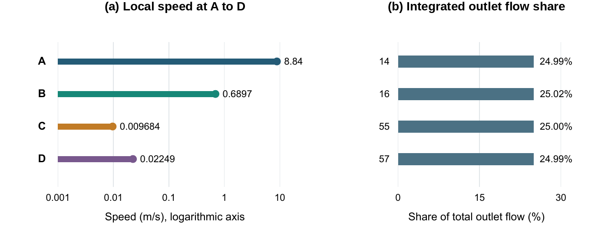
Image B2: Fine-mesh PVA model at 450 kPa and t = 1 s: (a) local speeds at A–D on a logarithmic axis; (b) fraction of the total outlet flow at each outlet.
Both supplementary meshes use linear velocity interpolation and relative tolerance 0.001 (Table B3). Refinement changes inlet flow by 6.135%, sampled speeds by up to 16.66% and shear rates by up to 131.2%; speed changes at C and D are 9.506% and 10.17%. The fine-mesh flux discrepancy is 0.07465%, supporting conservation. The inlet-area integral changes by 3.211%, so mesh representation also contributes to differences. Conservation and late-time stability support the transport interpretation, while local gradients require further refinement.
| PVA probe mesh | Elements | Flux mismatch % |
|---|---|---|
| Coarse | 95815 | 0.6793 |
| Fine | 377218 | 0.07465 |
Table B3: PVA probe-mesh checks. Flux discrepancy is 100 × |Qout − Qin|/max(Qin, Qout), with both flows positive. Mesh differences quoted in the text use the fine-mesh magnitude as denominator.
Outlet geometry was checked by integration on the matched mesh. Each outlet face (boundaries 14, 16, 55 and 57) integrates to 1.0798 × 10−6 m2, an equivalent diameter of 1.17 mm, and the four together equal the 4.3193 × 10−6 m2 inlet face (2.35 mm). The branch probes place the outlet centres at x = ±4.52 mm and z = −6.766 or 2.285 mm, the corners of a 9.051 mm square centred within 0.04 mm of the neck probes’ axis (x = 0, z = −2.2 mm).
For the planned arrival tests, the arrival time ti of outlet i is the first time the liquid fraction averaged over its face exceeds 0.5 in the two-phase model, or the first video frame or sensor sample showing liquid at that outlet. The spread Δt = max ti − min ti is reported relative to the fill time tfill, with Δt/tfill < 5% as the proposed criterion; frame rate and sampling are chosen so that this bound spans at least five samples. Short shots are stopped at 80, 90 and 95% of the 0.674 mL cavity volume.
Appendix C. Planned measurements and data records
This appendix sets out the measurements planned for next semester and the records kept for the numerical work. The planned measurements link injection conditions to measured dimensions, defect occurrence and repeatability.
The proposed casting allocation is two candidate pressure settings with three independent fills per setting for the fixed PVA formulation, compared against the current setting. Each fill is assessed for completeness, defects, dimensions and outlet arrival order.
For planned casting comparisons, document batch age, temperature, geometry, outlet layout and freeze–thaw history; record mold-inlet pressure histories and casting order. Treat independently prepared fills as the replication unit. Define quality metrics and measurement procedures before comparing baseline and candidate settings.
| Evidence | Record needed | Purpose |
|---|---|---|
| Material preparation | Material grades and preparation records retained within the group; detailed composition, constituent ratios and batch quantities remain confidential | Reproducible precursor preparation |
| Rheology | Temperature- and age-controlled flow curves, fitted parameters and residuals, oscillatory response | Document formulation-specific constitutive inputs |
| Interfaces | Material–air surface tension and advancing/receding contact angles on actual mold surfaces | Characterize wetting and capillary behavior |
| Geometry and numerics | Further spatial and temporal checks; calibrated bench pressure–flow data; measured rheology | Quantify numerical and experimental agreement |
| Casting | Cavity pressure, flow rate, attempts and successes, scaled defect locations and sizes | Test transport and part-quality hypotheses |
| Processed mechanics | Mechanical characterization of the gelled formulation, held within the group. | Quantify the material after gelation |
| Outlet arrival | Arrival time at each outlet from video or outlet-contact logs; frame rate or sampling rate; short-shot front positions at 80–95% fill | Test simultaneous outlet filling |
| Silicone benchmark | Silicone grade, mix ratio and degassing; same mold and pressure; completeness, defects and dimensions. | Compare PVA and silicone castings from the same mold |
Table C1: Records required for manufacturing validation and input traceability.
The COMSOL models of the matched comparison, the twelve-case pressure series and the fine-mesh probe study are archived in the project folder, together with the mold CAD file, the rheology data and the pull-off records.
Appendix D. Physical size PVA pressure series
D.1. Global domain and supply response
Twelve PVA cases were recomputed at the verified physical dimensions using 111,713 elements, relative tolerance 0.001 and t = 1 s. Tables D1 and D2 report domain quantities and colocated C/D diagnostics. Inlet flow rises from 1.170 to 18.233 mL/s, a 15.58-fold increase; minimum viscosity decreases from 0.6737 to 0.5358 Pa·s. Flux discrepancies range from 0.2707% to 0.8859%. The series characterizes how pressure controls delivery through the mold.
| Inlet total pressure (kPa) | Maximum speed (m/s) | Mean speed (m/s) | Minimum viscosity (Pa·s) | Inward flow (mL/s) | Flux discrepancy (%) |
|---|---|---|---|---|---|
| 50 | 0.734 | 0.05472 | 0.6737 | 1.17 | 0.3916 |
| 100 | 1.738 | 0.1276 | 0.6095 | 2.731 | 0.2707 |
| 150 | 2.809 | 0.2038 | 0.5844 | 4.358 | 0.2757 |
| 200 | 3.923 | 0.2809 | 0.5704 | 5.999 | 0.3082 |
| 250 | 5.051 | 0.3579 | 0.5612 | 7.633 | 0.3566 |
| 300 | 6.176 | 0.4343 | 0.5546 | 9.246 | 0.4167 |
| 350 | 7.285 | 0.5098 | 0.5497 | 10.83 | 0.4843 |
| 400 | 8.373 | 0.5843 | 0.5457 | 12.38 | 0.5584 |
| 450 | 9.435 | 0.6576 | 0.5426 | 13.9 | 0.6365 |
| 500 | 10.47 | 0.7298 | 0.5399 | 15.38 | 0.718 |
| 550 | 11.47 | 0.8008 | 0.5377 | 16.83 | 0.8014 |
| 600 | 12.45 | 0.8706 | 0.5358 | 18.23 | 0.8859 |
Table D1: PVA pressure series at t = 1 s. Speed is in m/s and inward flow is in mL/s.
D.2. Cavity transport and branch balance
| Pressure (kPa) | U at C (mm/s) | U at D (mm/s) | Re at C | Re at D | Ca at C | Ca at D |
|---|---|---|---|---|---|---|
| 50 | 0.502 | 1.176 | 5.71 × 10⁻⁵ | 0.0001851 | 0.09447 | 0.1599 |
| 100 | 1.282 | 3.029 | 0.0002349 | 0.0007627 | 0.1498 | 0.2574 |
| 150 | 2.219 | 5.2 | 0.0005322 | 0.001686 | 0.1979 | 0.3431 |
| 200 | 3.256 | 7.566 | 0.0009377 | 0.002904 | 0.2419 | 0.4219 |
| 250 | 4.362 | 10.05 | 0.001439 | 0.004365 | 0.283 | 0.495 |
| 300 | 5.516 | 12.62 | 0.002024 | 0.00603 | 0.3217 | 0.5652 |
| 350 | 6.702 | 15.23 | 0.002681 | 0.007864 | 0.3585 | 0.6312 |
| 400 | 7.904 | 17.87 | 0.003398 | 0.009839 | 0.3935 | 0.6943 |
| 450 | 9.11 | 20.55 | 0.004161 | 0.01195 | 0.4268 | 0.7563 |
| 500 | 10.31 | 23.25 | 0.004958 | 0.01418 | 0.4584 | 0.816 |
| 550 | 11.48 | 25.98 | 0.005776 | 0.01653 | 0.4884 | 0.8741 |
| 600 | 12.63 | 28.78 | 0.006603 | 0.01901 | 0.5166 | 0.9322 |
Table D2: Local PVA diagnostics across pressure at t = 1 s. C/D coordinates are those in Table B1; Re uses Lref = 1 mm and Ca uses σref = 0.05 N/m. Values share the common mesh and are point samples.
Across the pressure series, the 48 outlet-flow fractions Qj/ΣQout range from 24.9696% to 25.0322%. The largest branch-to-branch range at any pressure is 0.05844 percentage points, at 50 kPa. This consistently balanced distribution supports supply to all four outlet regions over the tested pressure range.
PVA inlet flow is 1.170, 4.358, 9.246 and 13.902 mL/s at 50, 150, 300 and 450 kPa, respectively. From 450 to 600 kPa, flow increases by 31.16%, pressure by 33.33% and minimum viscosity decreases by 1.25%. These trends guide pressure selection against throughput requirements and will be combined with casting measurements to refine the operating range.
References
Caglar, B., Tekin, C., Karasu, F., & Michaud, V. (2019). Assessment of capillary phenomena in liquid composite molding. Composites Part A: Applied Science and Manufacturing, 120, 73–83. https://doi.org/10.1016/j.compositesa.2019.02.018
Celik, I. B., Ghia, U., Roache, P. J., Freitas, C. J., Coleman, H., & Raad, P. E. (2008). Procedure for estimation and reporting of uncertainty due to discretization in CFD applications. Journal of Fluids Engineering, 130(7), Article 078001. https://doi.org/10.1115/1.2960953
Chan, T. S., Srivastava, S., Marchand, A., Andreotti, B., Biferale, L., Toschi, F., & Snoeijer, J. H. (2013). Hydrodynamics of air entrainment by moving contact lines. Physics of Fluids, 25(7), Article 074105. https://doi.org/10.1063/1.4814466
Chen, M. H., Wang, L. L., Chung, J. J., Kim, Y.-H., Atluri, P., & Burdick, J. A. (2017). Methods to assess shear-thinning hydrogels for application as injectable biomaterials. ACS Biomaterials Science & Engineering, 3(12), 3146–3160. https://doi.org/10.1021/acsbiomaterials.7b00734
Cheng, Y., Chan, K. H., Wang, X.-Q., Ding, T., Li, T., Lu, X., & Ho, G. W. (2019). Direct-ink-write 3D printing of hydrogels into biomimetic soft robots. ACS Nano, 13(11), 13176–13184. https://doi.org/10.1021/acsnano.9b06144
COMSOL. (n.d.-a). Fluid properties [CFD Module documentation, version 6.3]. Retrieved October 27, 2026, from https://doc.comsol.com/6.3/doc/com.comsol.help.cfd/cfd_ug_fluidflow_single.06.027.html
COMSOL. (n.d.-b). Microfluidics Module user’s guide (Version 6.3; glossary, capillary-number entry, pp. 408–409). Retrieved October 27, 2026, from https://doc.comsol.com/6.3/doc/com.comsol.help.mfl/MicrofluidicsModuleUsersGuide.pdf
COMSOL. (n.d.-c). Multiphase flow [Polymer Flow Module documentation, version 6.3]. Retrieved October 27, 2026, from https://doc.comsol.com/6.3/doc/com.comsol.help.polymer/polymer_ug_modeling.05.09.html
COMSOL. (n.d.-d). Non-Newtonian flow [CFD Module documentation, version 6.3]. Retrieved October 27, 2026, from https://doc.comsol.com/6.3/doc/com.comsol.help.cfd/cfd_ug_fluidflow_single.06.082.html
COMSOL. (n.d.-e). The Reynolds number [CFD Module documentation, version 6.3]. Retrieved October 27, 2026, from https://doc.comsol.com/6.3/doc/com.comsol.help.cfd/cfd_ug_fluidflow_single.06.081.html
COMSOL. (n.d.-f). The Wetted Wall coupling feature [CFD Module documentation, version 6.3]. Retrieved October 27, 2026, from https://doc.comsol.com/6.3/doc/com.comsol.help.cfd/cfd_ug_fluidflow_multi.09.011.html
Holloway, J. L., Lowman, A. M., & Palmese, G. R. (2013). The role of crystallization and phase separation in the formation of physically cross-linked PVA hydrogels. Soft Matter, 9(3), 826–833. https://doi.org/10.1039/C2SM26763B
Kennedy, P., & Zheng, R. (2013). Flow analysis of injection molds (2nd ed.). Hanser.
Laschi, C. (2022). Embodied intelligence in soft robotics: Joys and sorrows. IOP Conference Series: Materials Science and Engineering, 1261(1), Article 012002. https://doi.org/10.1088/1757-899X/1261/1/012002
Marchese, A. D., Katzschmann, R. K., & Rus, D. (2015). A recipe for soft fluidic elastomer robots. Soft Robotics, 2(1), 7–25. https://doi.org/10.1089/soro.2014.0022
Oberkampf, W. L., & Trucano, T. G. (2002). Verification and validation in computational fluid dynamics. Progress in Aerospace Sciences, 38(3), 209–272. https://doi.org/10.1016/S0376-0421(02)00005-2
Rus, D., & Tolley, M. T. (2015). Design, fabrication and control of soft robots. Nature, 521(7553), 467–475. https://doi.org/10.1038/nature14543
Sun, J.-Y., Zhao, X., Illeperuma, W. R. K., Chaudhuri, O., Oh, K. H., Mooney, D. J., Vlassak, J. J., & Suo, Z. (2012). Highly stretchable and tough hydrogels. Nature, 489(7414), 133–136. https://doi.org/10.1038/nature11409
Tramacere, F., Beccai, L., Kuba, M., Gozzi, A., Bifone, A., & Mazzolai, B. (2013). The morphology and adhesion mechanism of Octopus vulgaris suckers. PLOS ONE, 8(6), Article e65074. https://doi.org/10.1371/journal.pone.0065074
Wallin, T. J., Pikul, J. H., & Shepherd, R. F. (2018). 3D printing of soft robotic systems. Nature Reviews Materials, 3(6), 84–100. https://doi.org/10.1038/s41578-018-0002-2
Washburn, E. W. (1921). The dynamics of capillary flow. Physical Review, 17(3), 273–283. https://doi.org/10.1103/PhysRev.17.273
Yuk, H., Lin, S., Ma, C., Takaffoli, M., Fang, N. X., & Zhao, X. (2017). Hydraulic hydrogel actuators and robots optically and sonically camouflaged in water. Nature Communications, 8, Article 14230. https://doi.org/10.1038/ncomms14230